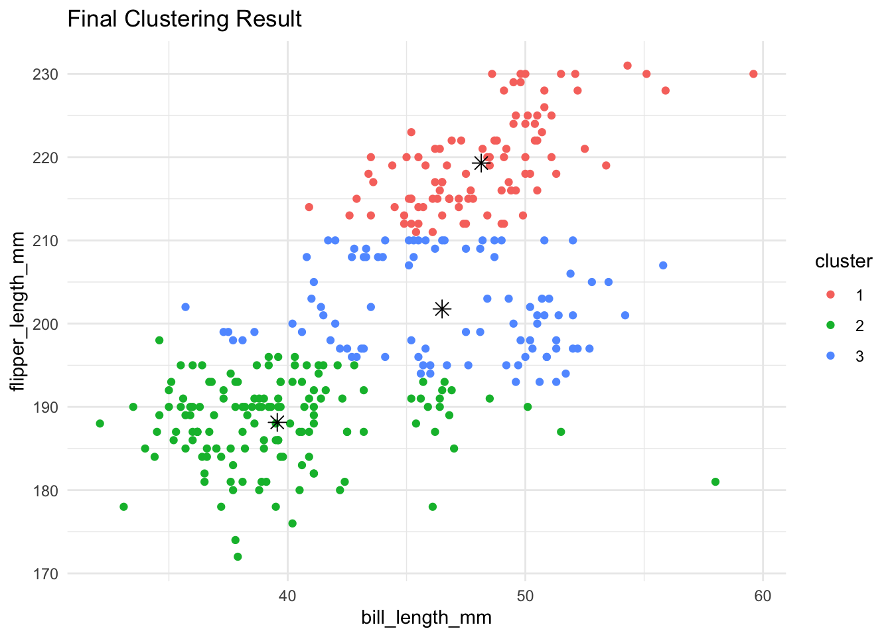
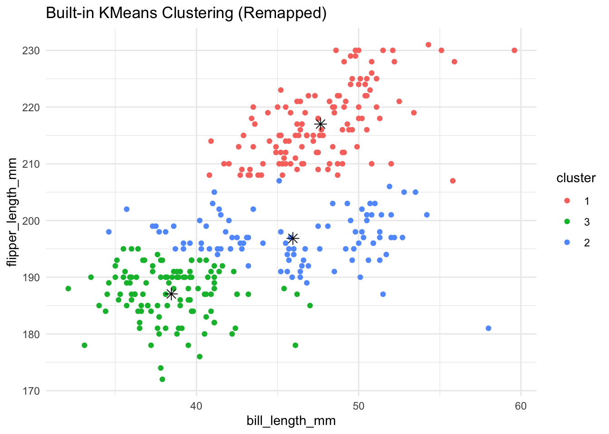
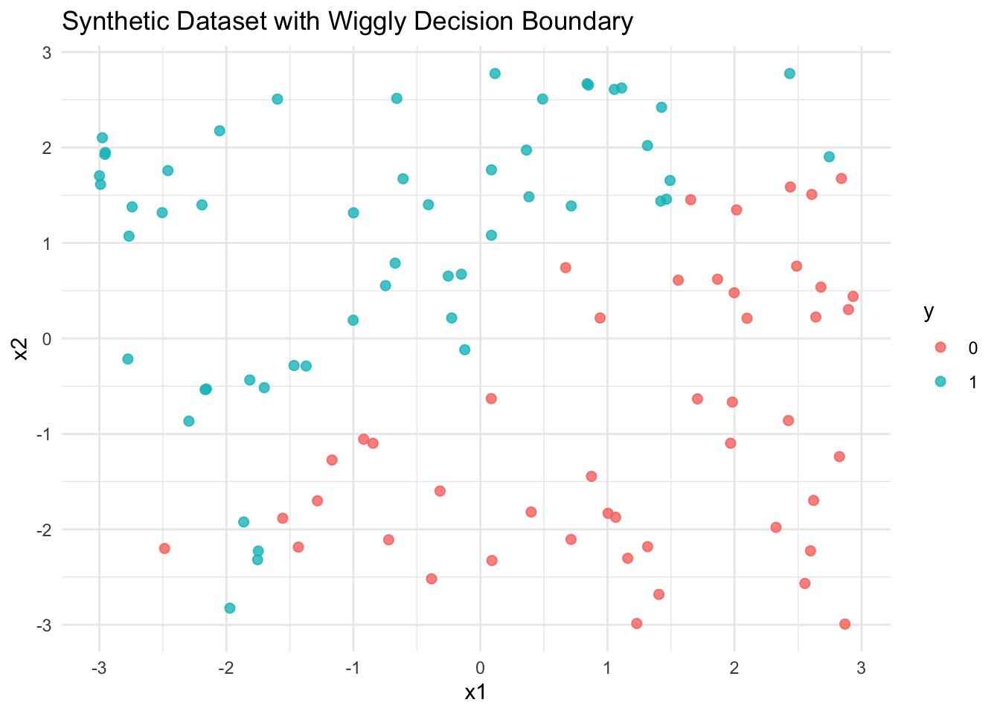
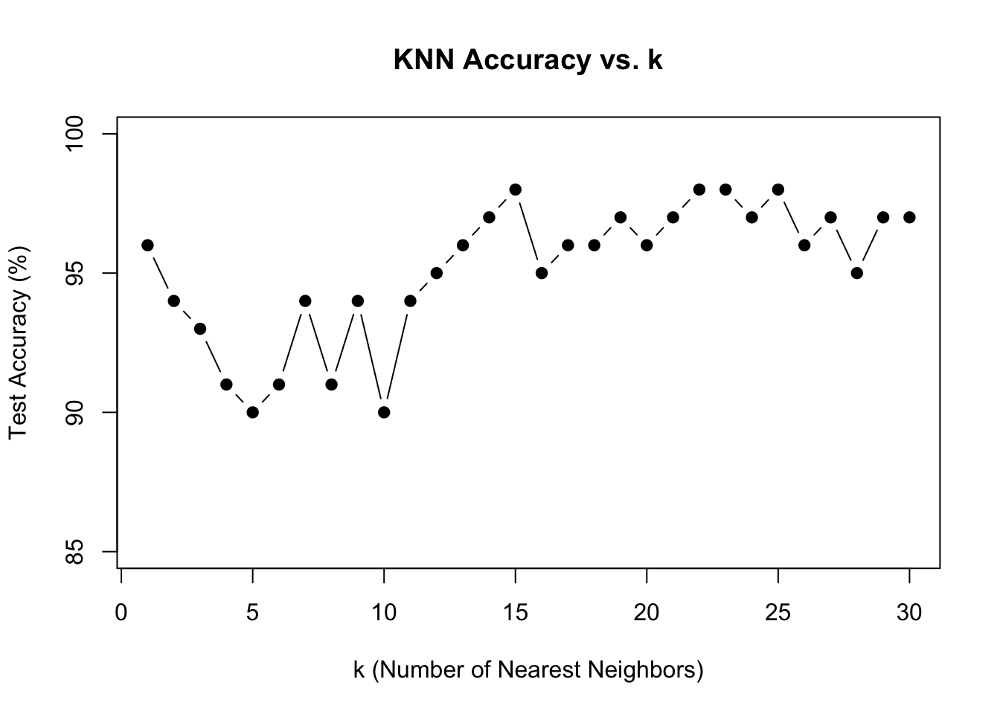

library(ggplot2)
library(dplyr)
Attaching package: 'dplyr'The following objects are masked from 'package:stats':
filter, lagThe following objects are masked from 'package:base':
intersect, setdiff, setequal, unionlibrary(readr)Cecelia
June 11, 2025
In this section, I implemented a custom version of the K-Means clustering algorithm from scratch and applied it to the Palmer Penguins dataset using two numerical features: and . The objective was to understand and visualize the step-by-step behavior of K-Means and then compare the results with R’s built-in function.
Attaching package: 'dplyr'The following objects are masked from 'package:stats':
filter, lagThe following objects are masked from 'package:base':
intersect, setdiff, setequal, unionWe begin by loading the Palmer Penguins dataset and selecting only the relevant variables. Missing values are removed to ensure numerical stability:
Rows: 333 Columns: 8
── Column specification ────────────────────────────────────────────────────────
Delimiter: ","
chr (3): species, island, sex
dbl (5): bill_length_mm, bill_depth_mm, flipper_length_mm, body_mass_g, year
ℹ Use `spec()` to retrieve the full column specification for this data.
ℹ Specify the column types or set `show_col_types = FALSE` to quiet this message.# A tibble: 6 × 8
species island bill_length_mm bill_depth_mm flipper_length_… body_mass_g sex
<chr> <chr> <dbl> <dbl> <dbl> <dbl> <chr>
1 Adelie Torge… 39.1 18.7 181 3750 male
2 Adelie Torge… 39.5 17.4 186 3800 fema…
3 Adelie Torge… 40.3 18 195 3250 fema…
4 Adelie Torge… 36.7 19.3 193 3450 fema…
5 Adelie Torge… 39.3 20.6 190 3650 male
6 Adelie Torge… 38.9 17.8 181 3625 fema…
# … with 1 more variable: year <dbl># Keep only relevant columns and remove NA
data <- penguins %>%
select(bill_length_mm, flipper_length_mm) %>%
na.omit()
# Convert to matrix for computation
X <- as.matrix(data)
head(X) bill_length_mm flipper_length_mm
[1,] 39.1 181
[2,] 39.5 186
[3,] 40.3 195
[4,] 36.7 193
[5,] 39.3 190
[6,] 38.9 181To deepen understanding, I wrote my own K-Means algorithm, including a Euclidean distance function and an iterative centroid update loop. The algorithm performs the following steps:
Each iteration’s clustering result is visualized with , showing how clusters evolve over time.
# -----------------------------
# Custom K-Means Clustering Function
# -----------------------------
kmeans_custom <- function(X, k = 3, max_iter = 100) {
set.seed(123)
n <- nrow(X) # Number of data points
d <- ncol(X) # Number of features (2: bill + flipper)
# 1. Randomly select initial centroids
centroids <- X[sample(1:n, k), ]
clusters <- rep(0, n) # Initial cluster assignments
# 2. Begin Iterations
for (iter in 1:max_iter) {
old_clusters <- clusters
# 2.1 Assign clusters based on nearest centroid
for (i in 1:n) {
distances <- apply(centroids, 1, function(c) euclidean(X[i, ], c))
clusters[i] <- which.min(distances)
}
# 2.2 Recalculate centroids
for (j in 1:k) {
if (sum(clusters == j) > 0) {
centroids[j, ] <- colMeans(X[clusters == j, , drop = FALSE])
}
}
# 2.3 Check for convergence
if (all(old_clusters == clusters)) {
break
}
}
# 3. Return result
return(list(centroids = centroids, clusters = clusters))
}The plot below illustrates the progression of clusters across iterations. Different colors indicate different clusters, and black stars represent the centroids. This visualization helps track the movement of centroids and the formation of stable clusters.
# Recreate the final cluster plot using the returned result
df_final <- data.frame(
bill_length_mm = X[, 1],
flipper_length_mm = X[, 2],
cluster = as.factor(result_custom$clusters)
)
centroids_final <- data.frame(
x = result_custom$centroids[, 1],
y = result_custom$centroids[, 2]
)
ggplot(df_final, aes(x = bill_length_mm, y = flipper_length_mm, color = cluster)) +
geom_point() +
geom_point(data = centroids_final, aes(x = x, y = y),
color = "black", size = 3, shape = 8) +
ggtitle("Final Clustering Result") +
theme_minimal()
To validate the custom implementation, I applied R’s built-in function with the same \(k=3\):
# Step 1: Built-in kmeans
result_builtin <- kmeans(X, centers = 3, nstart = 10)
# Step 2: Cluster label + switch
df_builtin <- data.frame(
bill_length_mm = X[,1],
flipper_length_mm = X[,2],
cluster = as.factor(result_builtin$cluster)
)
df_builtin$cluster <- recode(df_builtin$cluster,
`1` = "1",
`2` = "3",
`3` = "2")
# Step 3: Plot
plot_builtin <- ggplot(df_builtin, aes(x = bill_length_mm, y = flipper_length_mm, color = cluster)) +
geom_point() +
geom_point(data = data.frame(result_builtin$centers),
aes(x = bill_length_mm, y = flipper_length_mm),
color = "black", size = 3, shape = 8) +
ggtitle("Built-in KMeans Clustering (Remapped)") +
theme_minimal()
print(plot_builtin)
The final cluster assignments from both methods showed a high degree of similarity, indicating that the custom implementation is consistent with the standard one.
To determine the appropriate number of clusters ( K ), I computed two common clustering evaluation metrics: the within-cluster sum of squares (WSS) and the average silhouette score for values of ( K ) ranging from 2 to 7. These methods provide complementary perspectives on clustering compactness and separation.
WSS (Elbow Method): Measures the total squared distance between each point and its assigned cluster centroid. A sharp drop followed by a flattening curve (an “elbow”) typically indicates the optimal ( K ).
Silhouette Score: Captures how similar a point is to its own cluster compared to other clusters. Scores range from -1 to 1, with higher values indicating better-defined clusters.
The following R loop was used to compute both metrics:
Given both metrics and domain context (i.e., three known penguin species), ( K = 3 ) is a strong and interpretable choice for clustering this dataset.
In this section, I implemented the K-Nearest Neighbors (KNN) algorithm from scratch and tested it on a synthetic dataset with a nonlinear decision boundary. The project includes the generation of training and test datasets, a custom implementation of KNN, and performance evaluation against R’s built-in KNN classifier.
We begin by generating a synthetic dataset of 100 observations, where each point has two features and , and a binary class label determined by whether the point lies above or below a nonlinear boundary defined by ((4x_1) + x_1).
The resulting dataset is plotted below, showing a wiggly separation boundary between the two classes:
ggplot(dat, aes(x = x1, y = x2, color = y)) +
geom_point(size = 2, alpha = 0.8) +
ggtitle("Synthetic Dataset with Wiggly Decision Boundary") +
theme_minimal()
We also generated a separate test dataset using a different seed:
# Generate test data (100 points, different seed)
set.seed(123)
n_test <- 100
x1_test <- runif(n_test, -3, 3)
x2_test <- runif(n_test, -3, 3)
boundary_test <- sin(4 * x1_test) + x1_test
y_test <- ifelse(x2_test > boundary_test, 1, 0) |> as.factor()
test_data <- data.frame(x1 = x1_test, x2 = x2_test, y = y_test)I created a custom function to manually classify test points using the KNN algorithm. The function calculates Euclidean distances from each test point to all training points, identifies the ( k ) nearest neighbors, and returns the most common class.
# Custom KNN function
knn_predict <- function(train_x, train_y, test_x, k = 3) {
predict_y <- c()
for (i in 1:nrow(test_x)) {
distances <- apply(train_x, 1, function(row) sqrt(sum((row - test_x[i, ])^2)))
nearest_idx <- order(distances)[1:k]
nearest_labels <- train_y[nearest_idx]
pred <- names(sort(table(nearest_labels), decreasing = TRUE))[1]
predict_y <- c(predict_y, pred)
}
return(as.factor(predict_y))
}class::knn()We validate the custom classifier against R’s built-in function from the package:
train_x <- as.matrix(dat[, c("x1", "x2")])
train_y <- dat$y
test_x <- as.matrix(test_data[, c("x1", "x2")])
test_y <- test_data$y
y_builtin <- knn(train = train_x, test = test_x, cl = train_y, k = 5)
# Compare with custom prediction
y_custom <- knn_predict(train_x, train_y, test_x, k = 5)
# Accuracy
acc_builtin <- mean(y_builtin == test_y)
acc_custom <- mean(y_custom == test_y)
cat("Custom KNN accuracy:", round(acc_custom, 3), "\n")Custom KNN accuracy: 0.9 Built-in KNN accuracy: 0.9 We verified the correctness of our custom KNN implementation by comparing it against R’s built-in class::knn() function. Both methods achieved an identical accuracy of 90% on the test set for k = 5, confirming that our manual algorithm correctly replicates the expected KNN logic.
To determine the optimal value of ( k ), I tested values from 1 to 30 using the custom classifier and plotted the resulting accuracy curve:
#Plot the Accuracy vs. k
plot(k_values, accuracies * 100, type = "b", pch = 19,
xlab = "k (Number of Nearest Neighbors)",
ylab = "Test Accuracy (%)",
main = "KNN Accuracy vs. k",
ylim = c(min(accuracies * 100) - 5, 100))
The best performance occurred at ( k = 15 ), where accuracy reached 98%.
# Identify the Optimal k
best_k <- which.max(accuracies)
cat("Optimal k:", best_k, "with accuracy:", round(accuracies[best_k] * 100, 2), "%\n")Optimal k: 15 with accuracy: 98 %We evaluated the performance of our custom KNN classifier for k ranging from 1 to 30. The classification accuracy increased with k, peaking at k = 15, which achieved a test accuracy of 98%. This value strikes the best balance between overfitting (at small k) and underfitting (at large k). The model remained stable for k > 15, suggesting a robust decision boundary.